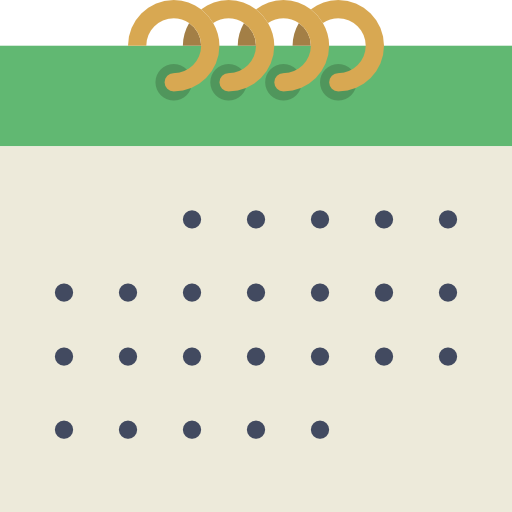

The date range picker you've ever needed!
Caleran is a Date Range Picker plugin, built using jQuery and moment.js libraries. It can also be used as a single date picker besides the range selection feature. Can be shown inline or used as a dropdown beside an input.
Features

It's a range picker!
You can use default ranges, or define your own!
It can also be used as a single date picker!
You can modify all the picker's behaviour like hiding some part, disabling some feature etc.
Supports fast month and year navigation!
If you don't like dropdowns, you can convert your input to an inline calendar!
It renders beautifully on mobile devices
Also has a different landscape layout
You can slide between months!
We support them all!
(What moment.js supports :P)
You can re-design completely using SASS.
Yes, it's the automation era.
How to use it
The main files of this plugin are caleran.min.js and caleran.min.css, which are generated by compiling and minifying caleran.js and caleran.css. The plugin relies on jQuery and moment.js libraries, also needs to be included before including caleran.min.js.
The font used on this plugin is Roboto, and the icons are provided by Font Awesome which are included remotely from their CDN's. You can change it anyway you want.
The example configuration which can be found in the base index file is:
<link href="https://fonts.googleapis.com/css?family=Roboto:300,400,400i,500,700" rel="stylesheet"/>
<link href="http://maxcdn.bootstrapcdn.com/font-awesome/4.7.0/css/font-awesome.min.css" rel="stylesheet"/>
<script type="text/javascript" src="http://ajax.googleapis.com/ajax/libs/jquery/2.1.4/jquery.min.js"></script>
<script>window.jQuery || document.write('<script src="js/jquery-2.1.4.min.js" type="text/javascript"><\/script>');
</script>
<!-- .caleran includes -->
<link href="build/css/caleran.min.css" rel="stylesheet"/>
<script src="build/js/moment.min.js"></script>
<script src="build/js/caleran.min.js"></script>
<!-- .end caleran includes -->
Then, to attach a caleran object to an element you desire, use this:
$(".caleran").caleran();
You can customize your plugin with options you provide to the initializing function,
$(".caleran").caleran({inline: true, startOnMonday: true});
or the element's data-plugin-options property.
<input class="caleran" data-plugin-options='{"calendarCount":1,"showHeader":true,"showFooter":true}'
name="calendar-input" type="text" value="08.08.2017 - 08.09.2017"/>
Once initalized, you can access the caleran object like this:
var caleran = $(".caleran:eq(3)").data("caleran");
caleran.config.startDate = new Date();
caleran.reDrawCalendars();
Properties
Once you've got the caleran instance object, you can access these properties:
elem[DOM node object]: The HTML dom node which the instance is created on.$elem[jQuery Object]: jQuery object of the dom node. Equals to$(caleran.elem)
Please Note that if you've chosen a different target element, you will be accessing the initiator element by calling
caleran.$elem. Your actual target element would becaleran.config.target.
For example,
var caleran = $("#elem1").caleran();
// caleran.elem will be equal to document.getElementById("elem1") or $("#elem1").get(0);
// caleran.$elem will be equal to $("#elem1");
config[JS Object]: The instance's configuration object. Consists of merging default values and user defined settings. The details of it is explained in the Options section.
These properties are also defined, but not recommended to tinker on.
container[jQuery Object]: This refers to the outermost container element of the instance dropdown or inline instance and the input itself.header[jQuery Object]: This refers to the header part of the plugin.footer[jQuery Object]: This refers to the footer part, - not the mobile buttons part - the ranges part of the plugin.input[jQuery Object]: This refers to the first child of the container, which contains everything except the input which is caleran instantiated on.
Configuration
These are the options you can set with the javascript plugin initialization object, or with the data-plugin-options html attribute on the input element, or within the events by directly modifying the caleran.config object.
startDate[moment object|javascript Date Object|string]: the selected start date, initially today is selected if not defined inside the input's value, or any of the initialization configuration methods.endDate[moment object|javascript Date Object|string]: the selected end date, initially today is selected if not defined inside the input's value, or any of the initialization configuration methods.format[string]: the default format for showing in input, defaults to short date format of locale, for all possible inputs, look here: https://momentjs.com/docs/#/displaying/format/ default: 'L'dateSeparator[string]: if not used as a single date picker, this will be the seperator, default " - ".calendarCount[integer]: how many calendars will be shown in the plugin screen, default 2inline[boolean]: display as an inline input replacement instead of input dropdown. default: falseminDate[moment object|javascript Date Object|string|null]: minimum selectable date, default null (no minimum)maxDate[moment object|javascript Date Object|string|null]: maximum selectable date, default null (no maximum)showHeader[boolean]: visibility of the part which displays the selected start and end dates, default trueshowFooter[boolean]: visibility of the part which contains user defined ranges, default true- new
startEmpty[boolean]: whether the input should remain empty until user makes a selection, default false - new
enableKeyboard[boolean]: enable this if you want to add keyboard support to the calendar. The keys are:- UP : Go to same weekday on the previous week
- DOWN : Go to same weekday on the next week
- LEFT : Go to the previous day
- RIGHT : Go to the next day
- PG UP : Go to the previous month
- PG DOWN : Go to the next month
- SHIFT + PG UP : Go to the previous year
- SHIFT + PG DOWN : Go to the next year
startOnMonday[boolean]: false, // if you want to start the calendars on Monday, set this to true. Note that if the locale already starts on Monday, this setting will be ignored.container[string]: the selector of the dropdowns container, default "body"oneCalendarWidth[integer]: the width of one calendar, if two calendars are shown, the input width will be 2 * this setting. default 230showOn["bottom"|"top"]: dropdown placement position relative to input element, will be adjusted to the viewport, default "bottom"locale[string]: moment locale setting, for more information: https://momentjs.com/docs/#/i18n/changing-locale/, and for a list of available locales: https://momentjs.com/ (bottom of the page)singleDate[boolean]: if you want a single date picker, set this to true, default falsetarget: [jquery object] the element to update after selection, if it's null, the element that is instantiated on will be updated. default nullranges: [array] predefined ranges range objects array, which each will create a button in the footer, and when the user clicks, it'll automatically will be applied. One range is defined like below:title[string]: the label which will appear on the button,startDate[moment object|javascript Date Object|string]: the first date of the range,endDate[moment object|javascript Date Object|string]: the last date of the range,
rangeLabel[string] : The title displayed in the defined ranges list section, default "Ranges: "cancelLabel[string]: The cancel button label, default "Cancel"applyLabel[string]: The apply button label, default "Apply"enableMonthSwitcher[boolean]: Enables the month switcher when clicking on month names. Default: trueenableYearSwitcher[boolean]: Enables the year switcher when clicking on years. Default: trueautoCloseOnSelect[boolean]: On instances that are not displayed inline, this setting is used to automatically close the dropdown when a selection is made.disableDays[function]: Enables day based disabling filters, input value is the current day to be processed. Example:{ disableDays: function(day){ return day.isSame(moment("17/05/2017")); // will return true on that day and the day will be disabled. } }disabledRanges[object array]: Enables user to disable specific ranges from selection. Can be used withcontinuousoption to preserve continuity. Object structure:[{ start: [moment object], end: [moment object]}, ..]continuous[boolean]: Adds a check if the selected range continues any disabled days. Reverts the selection to it's original state when the user tries to select a range which contains a disabled date.
Available Events
onbeforeselect[function]: event which is triggered before selecting the end date ( a range selection is completed). The return value decides whether the selection will happen. Returning false will prevent the input to update.Prototype:
onbeforeselect: function(caleran, startDate, endDate){ // caleran: caleran object instance // startDate: moment.js instance // endDate: moment.js instance return true; // false prevents update }onafterselect[function]: event which is triggered after selecting the end date ( the input value changed )Prototype:
onafterselect: function(caleran, startDate, endDate){ // caleran: caleran object instance // startDate: moment.js instance // endDate: moment.js instance }onbeforeshow[function]: event which is triggered before showing the dropdownPrototype:
onbeforeshow: function(caleran){ // caleran: caleran object instance }onbeforehide[function]: event which is triggered before hiding the dropdownPrototype:
onbeforehide: function(caleran){ // caleran: caleran object instance }onaftershow[function]: event which is triggered after showing the dropdownPrototype:
onaftershow: function(caleran){ // caleran: caleran object instance }onafterhide[function]: event which is triggered after hiding the dropdownPrototype:
onafterhide: function(caleran){ // caleran: caleran object instance }onfirstselect[function]: event which is triggered after selecting the first date of rangesPrototype:
onfirstselect: function(caleran, startDate){ // caleran: caleran object instance // startDate: moment.js instance }onrangeselect[function]: event which is triggered after selecting a range from the defined range linksPrototype:
onrangeselect: function(caleran, range){ // caleran: caleran object instance // range: selected range definition }onbeforemonthchange[function]: event which fires before changing the first calendar month of multiple calendars, or the month of a single calendar. The return value decides whether the month switch will take place.Prototype:
onbeforemonthchange: function(caleran, month, direction){ // caleran: caleran object instance // month : moment.js object of first day of the month selected on the **first** calendar // direction: "next" or "prev", shows the month change direction. if `month.month()` is 4, // and direction is "prev", next month will be 3. return true; // false disables switching }onaftermonthchange[function]: event which fires after changing the first calendar month of multiple calendars, or the month of a single calendarPrototype:
onaftermonthchange: function(caleran, month){ // caleran: caleran object instance // month : moment.js object of first day of the month selected on the first calendar }ondraw[function]: event which fires after redraws in calendarPrototype:
onredraw: function(caleran){ // caleran: caleran object instance }oninit[function]: event which fires after instance initializationPrototype:
oninit: function(caleran){ // caleran: caleran object instance }
Methods
validateDates[function]: Validates the startDate, endDate, minDate, maxDate parameters of the instance configuration, by the means of parsability and order, and defaults to today's date for startDate and endDate, and to null for maxDate and minDate.fetchInputs[function]: Retrieves the date(s) from the instance holder input and validates them before putting it to it's configuration.updateInput[function]: Updates the instance holder input with the instance values and configuration.drawNextMonth[function]: Triggers the instance show the next month after the first calendar month as the first calendar.drawPrevMonth[function]: Triggers the instance show the previous month before the first calendar month as the first calendar.reDrawCalendars[function]: Triggers a complete restructuring of the instance. Drawing the container first, then the header, then the calendars, then the footer.reDrawCells[function]: Only modifies the calendar's related parts with the configuration variables. Doesn't entirely build the instance again likereDrawCalendarsmethod does.setViewport[function]: On dropdown instances, if the dropdown falls outside of the viewport (when shown, not scrolled) this function decides and calculates it's new position opposed to its configuration. For example, if the dropdown position is set tobottomand it falls below the page bottom edge, this method makes it appear as it was set totopfor once.showDropdown[function]: On dropdown and mobile instances, if the dropdown is not visible, this method triggers the show method.hideDropdown[function]: On dropdown and mobile instances, if the dropdown is visible, this method hides it.
Examples
Default Range Picker
Preview:
HTML:
<input type="text" id="caleran-ex-1" />
JavaScript:
<script type="text/javascript">
$("#caleran-ex-1").caleran();
</script>
Hiding the header
Preview:
HTML:
<input type="text" id="caleran-ex-2" />
JavaScript:
<script type="text/javascript">
$("#caleran-ex-2").caleran({showHeader: false});
</script>
Hiding the footer
Preview:
HTML:
<input type="text" id="caleran-ex-3" />
JavaScript:
<script type="text/javascript">
$("#caleran-ex-3").caleran({showFooter: false});
</script>
Changing calendar count
Preview:
HTML:
<input type="text" id="caleran-ex-4" />
JavaScript:
<script type="text/javascript">
$("#caleran-ex-4").caleran({calendarCount: 3});
</script>
Inline calendar
Preview:
HTML:
<input type="text" id="caleran-ex-5" />
JavaScript:
<script type="text/javascript">
$("#caleran-ex-5").caleran({inline: true});
</script>
Empty on initialization
Preview:
HTML:
<input type="text" id="caleran-ex-5-1" placeholder="Select a date" />
JavaScript:
<script type="text/javascript">
$("#caleran-ex-5-1").caleran({startEmpty: true});
</script>
Single date picker
Preview:
HTML:
<input type="text" id="caleran-ex-6" />
JavaScript:
<script type="text/javascript">
$("#caleran-ex-6").caleran({singleDate: true});
</script>
Range/Single switch
Preview:
HTML:
<label for='single-caleran-mod'>
<input type='radio' value="single" id='single-caleran-mod' name="caleran-type-selector"
class='caleran-type-selector'>
Single Date
</label>
<label for='multi-caleran-mod'>
<input type='radio' value="multi" id='multi-caleran-mod' name="caleran-type-selector"
class='caleran-type-selector' checked>
Multiple Dates
</label>
<input type="text" id="caleran-ex-6-4" />
JavaScript:
<script type="text/javascript">
$("#caleran-ex-6-4").caleran();
$(".caleran-type-selector").click(function(){
$("#caleran-ex-6-4").data("caleran").destroy();
$("#caleran-ex-6-4").caleran({
singleDate: $("input[name='caleran-type-selector']:checked").val() == "single" ? true : false
});
});
</script>
Linked Single Date Pickers
Preview:
HTML:
<input type="text" id="caleran-ex-6-5" />
JavaScript:
<script type="text/javascript">
$("#caleran-ex-6-5-start").caleran({
singleDate: true,
onafterselect: function(caleran, start){
var end = $("#caleran-ex-6-5-end").data("caleran");
end.config.startDate = moment(start);
end.config.minDate = moment(start);
end.updateInput();
end.$elem.click();
}
});
$("#caleran-ex-6-5-end").caleran({
singleDate: true
});
</script>
Minimal Single date picker
Preview:
HTML:
<input type="text" id="caleran-ex-6-2" />
JavaScript:
<script type="text/javascript">
$("#caleran-ex-6-2").caleran({
singleDate: true,
calendarCount: 1,
showHeader: false,
showFooter: false,
autoCloseOnSelect: true
});
</script>
Auto Close on Select
Preview:
HTML:
<input type="text" id="caleran-ex-6-1" />
JavaScript:
<script type="text/javascript">
$("#caleran-ex-6-1").caleran({autoCloseOnSelect: true});
</script>
Defining Min/Max Dates
Preview:
HTML:
<input type="text" id="caleran-ex-6-3" />
JavaScript:
<script type="text/javascript">
$("#caleran-ex-6-3").caleran({
minDate: moment().subtract(1, "weeks").startOf("week"),
maxDate: moment().add(1, "weeks").endOf("week")
});
</script>
Defining custom ranges
Preview:
HTML:
<input type="text" id="caleran-ex-7" />
JavaScript:
<script type="text/javascript">
$("#caleran-ex-7").caleran({ranges: [
{
title: "Next Week",
startDate: moment().add(1,"weeks").startOf("week"),
endDate: moment().add(1,"weeks").endOf("week")
},
{
title: "Today",
startDate: moment(),
endDate: moment()
},
{
title: "Yesterday",
startDate: moment().subtract(1,"days"),
endDate: moment().subtract(1,"days")
},
{
title: "Last 7 days",
startDate: moment().subtract(7,"days"),
endDate: moment().subtract(1,"days")
},
{
title: "Last 30 days",
startDate: moment().subtract(30,"days"),
endDate: moment().subtract(1,"days")
},
{
title: "This month",
startDate: moment().startOf("month"),
endDate: moment().endOf("month")
},
{
title: "Last month",
startDate: moment().subtract(1,"months").startOf("month"),
endDate: moment().subtract(1,"months").endOf("month")
}
]});
</script>
Custom events
Preview:
HTML:
<input type="text" id="caleran-ex-8" />
<div class="caleranlabel"></div>
JavaScript:
<script type="text/javascript">
$("#caleran-ex-8").caleran({
onafterselect: function(caleran, startDate, endDate) {
caleran.$elem.closest(".well").find(".caleranlabel")
.text("You have chosen between " + startDate.format('LLLL') + " and " + endDate.format('LLLL'));
}
});
</script>
Change first day of week
Preview:
HTML:
<input type="text" id="caleran-ex-9" />
JavaScript:
<script type="text/javascript">
$("#caleran-ex-9").caleran({startOnMonday: true});
</script>
Changing locale
Preview:
HTML:
<input type="text" id="caleran-ex-10" />
JavaScript:
<script type="text/javascript">
var userLanguage = navigator.language || navigator.userLanguage;
if(userLanguage == "en") userLanguage = "fr";
$("#caleran-ex-10").caleran({locale: userLanguage });
</script>
Week Select Mode
Preview:
HTML:
<input type="text" id="caleran-ex-10-1" />
JavaScript:
<script type="text/javascript">
$("#caleran-ex-10").caleran({
onfirstselect: function(elem,start){
elem.config.startDate = moment(start).startOf("week");
elem.config.endDate = moment(start).endOf("week");
elem.globals.endSelected = true;
elem.globals.startSelected = false;
elem.globals.hoverDate = null;
elem.$elem.find( ".caleran-apply" ).removeAttr( "disabled" );
}
});
</script>
Custom target element
Preview:
HTML:
<input type="text" id="caleran-ex-11-target" />
<button id="caleran-ex-11">Open Caleran</button>
JavaScript:
<script type="text/javascript">
$("#caleran-ex-11").caleran({target: $("#caleran-ex-11-target")});
</script>
Custom disabled ranges (with callback)
Note: This task would only fill the input on Wednesdays, because the only valid (selectable) dates are Wednesdays on the calendar. If the start day or end day isn't selectable, the plugin will revert itself to startEmpty state when initialized.
Preview:
HTML:
<input type="text" id="caleran-ex-13" />
JavaScript:
<script type="text/javascript">
$("#caleran-ex-13").caleran({
disableDays: function(day){
return day.day() != 3;
}
});
</script>
Custom disabled ranges (with array)
Preview:
HTML:
<input type="text" id="caleran-ex-13-2" value="19/03/2017" />
JavaScript:
<script type="text/javascript">
$("#caleran-ex-13-2").caleran({
disabledRanges: [
{
"start": moment("17/03/2017","DD/MM/YYYY"),
"end": moment("20/03/2017", "DD/MM/YYYY")
},
{
"start": moment("01/04/2017","DD/MM/YYYY"),
"end": moment("05/04/2017", "DD/MM/YYYY")
},
{
"start": moment("11/04/2017","DD/MM/YYYY"),
"end": moment("15/04/2017", "DD/MM/YYYY")
}
]
});
</script>
Custom disabled ranges (preserve continuousity)
Preview:
HTML:
<input type="text" id="caleran-ex-13-3" />
JavaScript:
<script type="text/javascript">
$("#caleran-ex-13-3").caleran({
continuous: true,
disabledRanges: [
{
start: moment("17/03/2017","DD/MM/YYYY"),
end: moment("20/03/2017", "DD/MM/YYYY")
},
{
"start": moment("01/04/2017","DD/MM/YYYY"),
"end": moment("05/04/2017", "DD/MM/YYYY")
},
{
"start": moment("11/04/2017","DD/MM/YYYY"),
"end": moment("15/04/2017", "DD/MM/YYYY")
}
]
});
</script>
Show & Hide with triggers
Preview:
HTML:
<input type="text" id="caleran-ex-13-1" />
<button class="caleran-show">Show Instance</button>
<button class="caleran-hide">Hide Instance</button>
JavaScript:
<script type="text/javascript">
$("#caleran-ex-13-1").caleran();
$(".caleran-show").on("click",function(e){
var caleran = $("#caleran-ex-13-1").data("caleran");
caleran.showDropdown(e);
});
$(".caleran-hide").on("click",function(e){
var caleran = $("#caleran-ex-13-1").data("caleran");
caleran.hideDropdown(e);
});
</script>
Using inside a modal
Preview:
HTML:
<!-- Modal -->
<div class="modal fade" id="myModal" tabindex="-1" role="dialog" aria-labelledby="myModalLabel">
<div class="modal-dialog" role="document">
<div class="modal-content">
<div class="modal-body">
<input type="text" id="caleran-ex-12" />
</div>
<div class="modal-footer">
<button type="button" class="btn btn-default" data-dismiss="modal">Close</button>
</div>
</div>
</div>
</div>
<!-- Button trigger modal -->
<button type="button" class="btn btn-primary" onclick="$('#myModal').modal('show');" >
Launch demo modal
</button>
JavaScript:
<script type="text/javascript">
$("#caleran-ex-12").caleran();
</script>
Important Notes
I left the caleran object fully accessible to the inner variables, so you can alter the object's config in any event. For example, you can alter the max date of the calendar after first selection like this (limiting the user to select max 7 days of the first selection):
onfirstselect: function(caleran, startDate){ caleran.config.maxDate = startDate.clone().add(7,"days"); }, onafterselect: function(caleran, startDate, endDate){ caleran.config.maxDate = null; }or another example, disabling previous date selection:
onfirstselect: function(caleran, startDate){ caleran.config.minDate = startDate.clone(); }, onafterselect: function(caleran, startDate, endDate){ caleran.config.minDate = null; }The cloning is very important when adding or subtracting, because they modify the reference element too! As you can see in the above examples, the startDate and the endDate elements are cloned when defining the maxDate and minDate values. If you don't want to modify the startDate or endDate intentionally, use cloning.
Mobile only supports modal like interface. Dropdowns and inline options currently don't work on mobile phones.
Mobile versions only show 1 calendar. If you want it to support multiple calendars on mobile or inline support, let me know how it should be designed, and I'll try to put it on the next release.Thanks to ginharja, it's now implemented.Only one event can be bound using the initialize config object. Multiple events are not supported.
Changelog
v1.0.0
- Released initial version.
v1.0.1
- before updating the input, added check for null variables
v1.1.0
- added
ondrawevent - added
disableDaysfunction to disable custom days - fixed
startOnMondayif moment.js locale already starts at Monday - fixed deprecated
jQuery.size()warnings - added
autoCloseOnSelectoption to close when a date/range is selected - added Show & Hide methods (
showDropdown/hideDropdown) - changed all locale aware weekdays to act constant in every locale (0-Sunday and 6-Saturday)
- added
oninitevent
- added
v1.1.1
- added event handler checks before event.stopPropagation occurances
- seperated click & tap events on mobile and desktop
- checked jQuery UI tap event exist before loading hammer.js
v1.1.2
- fixed range click locale bug (which causes wrong start date output)
v1.1.3
- fixed apply button click event on mobile screens
- added
disabledRangesoption to specify schedule like selections - added
countinuousoption to only allow continuous range selection
v1.2.0
- added direction parameter to
onbeforemonthchangeevent - added quick year and month switching feature
- added multiple calendar support for mobile
- added direction parameter to
v1.2.1
- fixed IE10 compatibility on JS and CSS
- made some optimizations
v1.2.2
- fixed uninitialized
startDateBackupvariable bug - added browserSync support
- fixed uninitialized
v1.2.3
- fixed event duplication on document click
- fixed outside triggers closing dropdown
- fixed target element confusion when different target option is specified
- added startEmpty option
- fixed multiple instance closing issues
- added missing event parameters to hideDropdown method
v.1.3.0
- fixed autoCloseOnSelect on singleDate version / mobile views
- changed code to make clicking on disabled days select start/end date
- added some transition delays to make it smoother
- added keyboard navigation (
enableKeyboardoption) up: previous week down: next week left: previous day right: next day space: select day pageup: previous month pagedown next month shift + pageup: previous year shift + pagedown: next year - added easy year switch buttons on year list
- fixed
startEmptycell selected classes - added destroy method and some extra tests
Copyright & Licenses
Caleran Date Range Picker
Copyright (c) Taha PAKSU http://www.tahapaksu.com
All rights reserved.Based on jQuery — New Wave JavaScript http://www.jquery.org
Copyright (c) JS Foundation and other contributors, https://js.foundation/
Released under jQuery License
All rights reserved.
Based on Moment.js http://www.momentjs.com
Copyright (c) JS Foundation and other contributors
Moment.js is freely distributable under the terms of the MIT license.
All rights reserved.Includes hammer.js http://hammerjs.github.io
Copyright (C) 2011-2014 by Jorik Tangelder (Eight Media)
hammer.js is freely distributable under the terms of the MIT license.
All rights reserved.